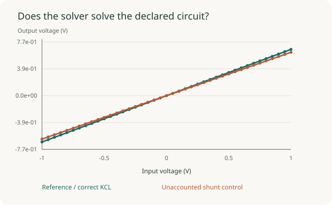
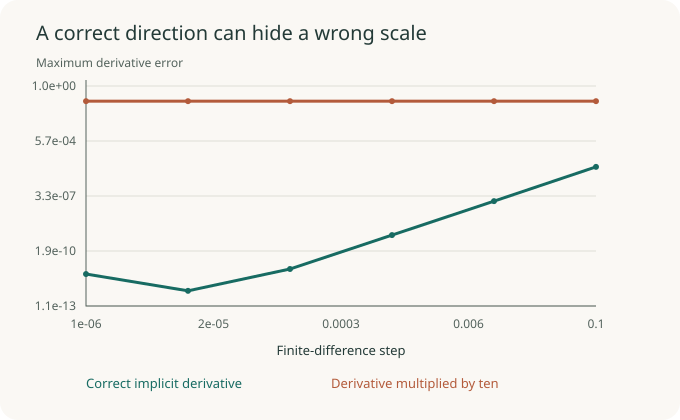

Write the run card.
Question, equation settings, environment, code identity, declared protocol, and seed.
Three practical checks turn a plausible result into something another researcher can inspect, challenge, and reproduce.
Textbook demonstration dataA voltage divider has a closed-form answer. The custom KCL solution agrees with it; an installed ngspice reference independently checks four operating points.
Add an unaccounted shunt in the candidate implementation and the outputs drift. The check sees the changed physics.
PASS · matching equations


A diode/resistor circuit supplies a smooth implicit problem. Its exact sensitivity is checked against fresh central differences over six step sizes.
Multiplying every gradient component by ten leaves cosine similarity essentially unchanged. A componentwise magnitude test catches the error.
This validates a smooth textbook example. Branch changes and nonsmooth circuits need additional analysis.
Question, equation settings, environment, code identity, declared protocol, and seed.
Record SHA-256 hashes for the numerical report and figures. Keep paths relative to the run.
The scratch control changes a metrics file. Its verification fails as intended.
The three SKILL.md directories tell an agent what to inspect, what evidence to collect, and where a conclusion must stop. The examples teach the checks; an actual audit uses the target project's equations and data.
Match the physics contract and inspect error by operating regime.
Read skill →Check the root, parameterization, step sweep, magnitude, and direction.
Read skill →Preserve declarations, source identity, artifact hashes, and claim limits.
Read skill →Local validation: 17 tests passed, including ngspice; six skill format checks passed. The skills' effect on agent performance has not been measured. All figures use fresh textbook examples.